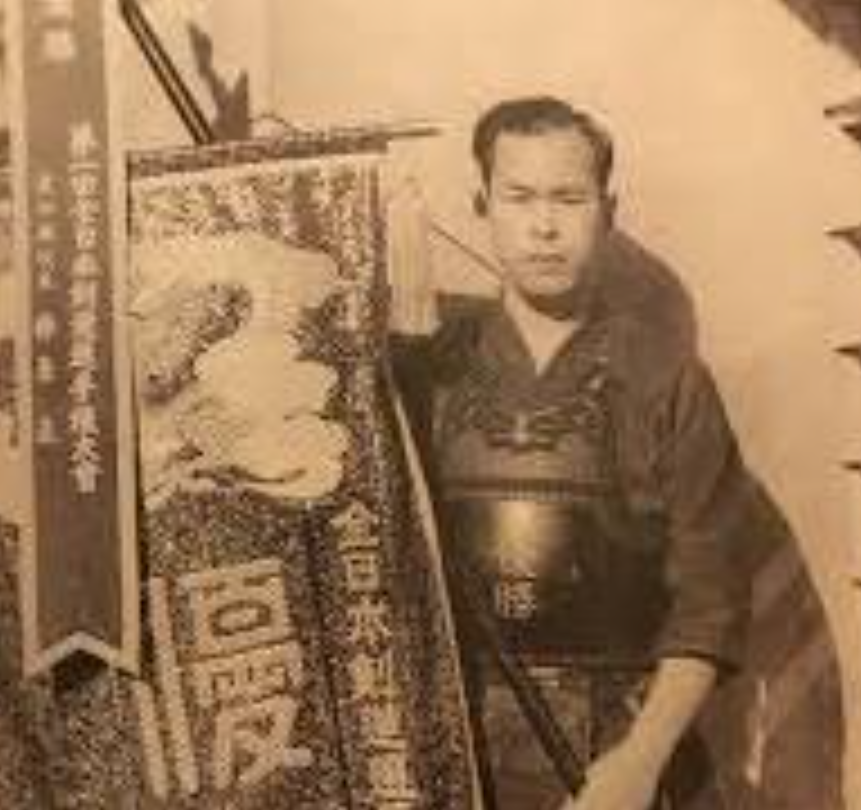
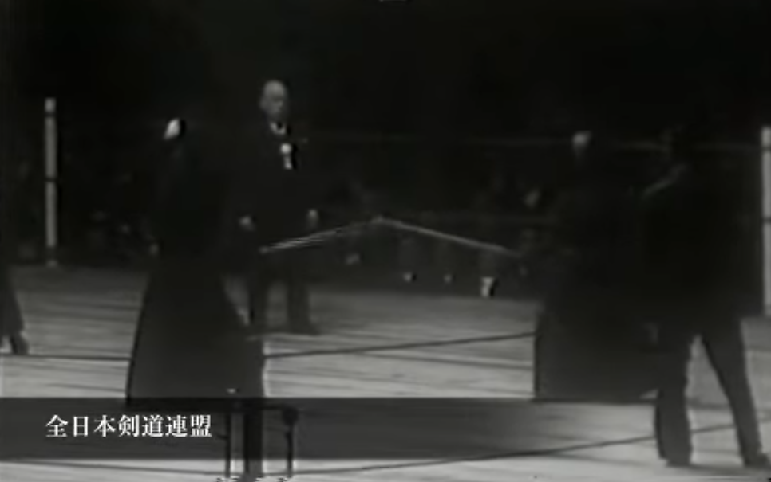
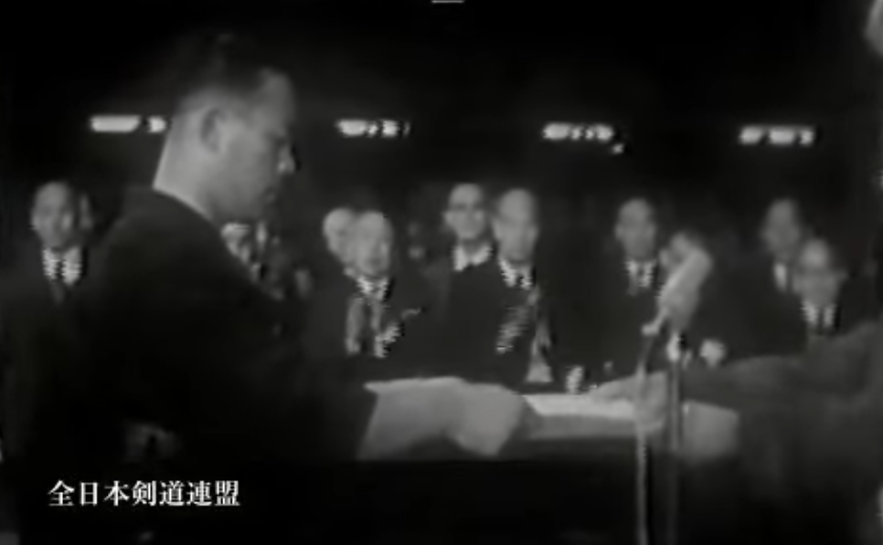
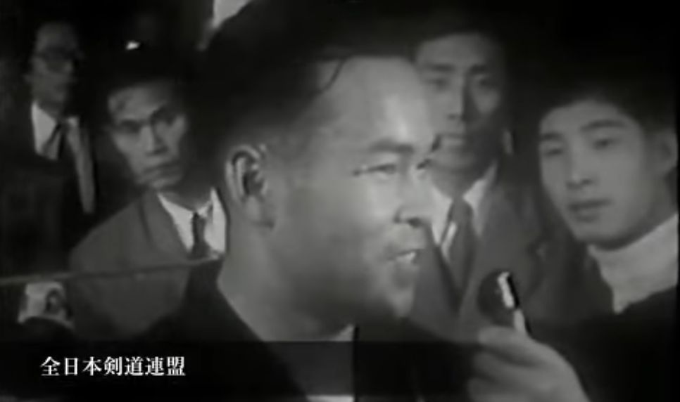

사카키하라 타다시(榊原正) · 1920년생 · 아이치현 출신
우승 당시 33세 · 나고야 교정관구 법무 교관(검도 사범)

역사의 시작을 알리다
1953년 11월 8일. 전후 일본의 수도 도쿄, 구라마에 국기관(蔵前国技館)에는 1만여 명의 관중이 운집했다. 검도 역사상 처음으로 도장 밖, 대중 앞에서 펼쳐지는 전국 최강 결정전을 보기 위해서였다.
당시 전일본검도연맹은 창립 직후였다. 연맹은 검도를 "특정한 사람들만의 검도"에서 "누구에게나 친숙한 검도"로 만들겠다는 목표 아래 전례 없는 시도를 감행했다. 입장료를 받고, 누구나 볼 수 있는 장소에서, 나이·단위·칭호에 일절 제한을 두지 않은 완전 개방형 선수권 대회를 연 것이다.
쇼지 무네미쓰(庄子宗光)가 저술한 『검도백년(剣道百年)』은 이 대회의 의의를 이렇게 기록한다.
"종래 검도는 도장이라는 딱딱한 껍데기 속에 갇혀 대중 앞에 나서는 일이 거의 없었다. 그런데 이번에 국기관이라는 대중의 한복판에 뛰어들어 입장료까지 받고 선수권 대회를 실시한 것은 검도계에 있어 가히 전례 없는 시도였다."
전국 53명의 대표가 예선을 통과해 이 자리에 모였다. 그리고 그 역사의 첫 페이지를 장식한 사람은, 대회 전까지 거의 주목받지 못한 33세의 법무 교관이었다.

제1회 전일본검도선수권대회 결승전 장면 (출처: 전일본검도연맹)
알려지지 않은 자의 강함
사카키하라 타다시는 아이치현 남쪽 해안도시 가마고리(蒲郡)에서 태어났다. 도호상업학교(東邦商業学校) 시절부터 두각을 나타냈고, 전후에는 나고야 교정관구의 법무 교관이 되었다.
대회 토너먼트에서 사카키하라는 6경기를 치렀다.
라운드
상대
결과
1회전
나가오 하츠지(静岡)
면면 승
2회전
야나이 마사이치(福島)
소면 승 (연장 4회)
3회전
아오야마 노리요시(山形)
면면 승
4회전
나카자와 요시오(広島)
소 승
준결승
우에다 하지메(香川)
소면 승
결승
아베 사부로(東京)
소 승
2회전에서는 전(前) 육군 도야마학교(戸山学校) 교관 출신의 상단 검사 야나이 마사이치(矢内正一, 44세)와 연장 4회 끝에 승리를 거뒀다. 준결승에서는 가가와현 대표 우에다 하지메(植田一, 40세)를 꺾고 결승에 올랐다.
결승 상대는 경시청의 아베 사부로(阿部三郎, 34세). 훗날 범사 9단에 이르는 강적이었다. 수많은 칼이 오갔지만 쉬이 승패가 나지 않았다. 막상막하의 승부가 이어지던 그때, 치고 나오는 아베의 손목을 사카키하라는 놓치지 않았다. '작은 손목' 하나로 전일본검도선수권대회의 전설이 시작되었다.

상장을 수여받는 사카키하라 타다시 (출처: 전일본검도연맹)
훗날 사카키하라는 이 경기를 이렇게 회고했다.
"경기가 시작됐을 때 승패를 떠나 정신이 없었습니다. 시간이 꽤 지났다고 느껴질 무렵 '이때다!' 싶은 순간이 왔고, 나는 '나오는 손목'을 쳤습니다. 두 번째 판이 시작되고 얼마 되지 않아 경기종료 벨이 울렸습니다. 한판승으로 이겼습니다. 5분이 꽤 빨리 지나간 것 같았다고 생각했습니다."
— 쇼지 무네미쓰, 『검도백년(剣道百年)』
『검도백년』은 사카키하라를 이렇게 평했다. "출발의 예리함, 손목에서 머리로 이어지는 빠름, 잘 공격하고 잘 지키는 견실함 등 보기 드문 훌륭한 선수였으며, 본 대회의 우승도 결코 우연이 아니었다."
그러나 정작 본인은 후년 『검도일본』의 취재에서 이렇게 말했다. "모른다는 것은 강한 것입니다." 다른 선수들의 정보도 없이 욕심도 압박도 없이 싸울 수 있었다는 뜻이었다.
예선 1위가 아닌 선수가 전국 챔피언이 된 날
3위에 오른 스즈키 모리하루(鈴木守治, 32세)는 같은 아이치현 출신으로, 사카키하라와 같은 도장에서 수련했다. 두 사람은 도호상업학교 선후배 사이이기도 했다. 당시 지도자였던 콘도 토시오(近藤利雄)는 "사카키하라가 가장 아래였고, 그 위가 스즈키"였다고 후에 증언했다. 스즈키는 천재형, 사카키하라는 이치에 맞는 정통파라는 평이었다.
아이치 예선에서도 스즈키가 1위, 사카키하라가 2위였다. 콘도는 사카키하라가 우승했다는 전보를 받고 스즈키의 착오가 아닌가 생각했다고 한다. 예선 1위가 아닌 선수가 전국 챔피언이 된 셈이었다.

우승 인터뷰 중인 사카키하라 타다시 (출처: 전일본검도연맹)
제1회 결승전 영상
제1회 전일본검도선수권대회 결승전 — 사카키하라 타다시 vs 아베 사부로 (출처: 전일본검도연맹 공식 유튜브)
All Japan Kendo Championship — Past Champions 1st Edition (1953): Sakakibara Tadashi (榊原正)
2026.06.01KendoNow
Sakakibara Tadashi (榊原正) · Born 1920 · Aichi Prefecture
Age 33 at time of victory · Correctional officer and kendo instructor, Nagoya
The Opening of History
November 8, 1953. Over ten thousand spectators gathered at the Kuramae Kokugikan in Tokyo. They had come to witness something that had never happened before — a national kendo championship held in public, outside the walls of any dojo.
The All Japan Kendo Federation had only recently been established. Its vision was bold: to transform kendo from a pursuit of the few into something the general public could see, understand, and embrace. The tournament was open to anyone who passed their regional qualifier — no age limit, no rank requirement, no restrictions on title. Admission was charged at the door.
Shoji Munemitsu, in his landmark history Kendo Hyakunen (One Hundred Years of Kendo), described the significance of the event:
"Kendo had long been confined within the hard shell of the dojo, rarely stepping out before the general public. The fact that it now leapt into the middle of the Kokugikan — charging admission and holding an open championship — was, for the kendo world, a truly unprecedented undertaking."
Fifty-three representatives, each having cleared their prefectural qualifier, assembled to contest the title. The man who would write the first page of that history was a 33-year-old correctional officer whom almost no one had been watching.
Final match of the 1st All Japan Kendo Championship (Source: All Japan Kendo Federation)
The Strength of the Unknown
Sakakibara Tadashi was born in Gamagori, a coastal city in southern Aichi Prefecture. He had distinguished himself at Toho Commercial School before becoming a correctional officer and kendo instructor at the Nagoya Regional Correctional Headquarters after the war.
Sakakibara fought six matches on his way to the title.
Round
Opponent
Result
Round 1
Nagao Hatsumi (Shizuoka)
Won (men, men)
Round 2
Yanai Masaichi (Fukushima)
Won (kote, men) — 4 overtimes
Round 3
Aoyama Noriyoshi (Yamagata)
Won (men, men)
Round 4
Nakazawa Yoshio (Hiroshima)
Won (kote)
Semi-final
Ueda Hajime (Kagawa)
Won (kote, men)
Final
Abe Saburo (Tokyo)
Won (kote)
In the second round, Sakakibara faced Yanai Masaichi (44), a jodan practitioner and former instructor at the Imperial Army's Toyama School. The match went to four overtimes before Sakakibara prevailed. In the semi-final, he defeated Ueda Hajime (40) of Kagawa to reach the final.
His opponent in the final was Abe Saburo (34) of the Metropolitan Police — a formidable kendoka who would later reach the rank of Hanshi 9th Dan. The two exchanged blow after blow, neither able to land a decisive strike. Then, in a moment of perfect timing, Sakakibara caught Abe's advancing kote. That single strike would become the founding legend of the All Japan Championship.
Sakakibara Tadashi receiving the trophy (Source: All Japan Kendo Federation)
Sakakibara later recalled the final this way:
"When the match began, I lost myself completely — winning or losing didn't enter my mind. After what felt like a long time, a moment came where I thought 'now.' I struck the kote as he came in. Shortly after the second point began, the bell rang. I had won by ippon. It felt like five minutes had passed very quickly."
— Shoji Munemitsu, Kendo Hyakunen
Kendo Hyakunen praised Sakakibara in these terms: "The sharpness of his first step, the speed with which he moved from kote to men, his balance of attack and defense — he was a remarkably complete kendoka, and his victory was by no means a matter of chance."
Yet Sakakibara himself, in a later interview with Kendo Nippon magazine, offered a simpler explanation: "Not knowing is its own kind of strength." He had gone into the tournament without information about his opponents, without expectation — and without pressure.
The Day the Second-Place Qualifier Became Champion
Suzuki Moriharu (32), who finished third, was also from Aichi and had trained in the same dojo. The two were senpai and kohai at Toho Commercial School. Kondo Toshio, who coached them both, later said that among the school's top five players, "Sakakibara was at the bottom, with Suzuki above him." Suzuki was the natural talent; Sakakibara, the principled technician.
In the Aichi prefectural qualifier, Suzuki had placed first and Sakakibara second. When Kondo received the telegram announcing Sakakibara's national victory, he reportedly wondered whether there had been a mistake — whether it should have read "Suzuki." The second-place qualifier had become champion of Japan.
Sakakibara Tadashi in post-match interview (Source: All Japan Kendo Federation)
Final Match — Video
1st All Japan Kendo Championship Final — Sakakibara Tadashi vs. Abe Saburo (Source: All Japan Kendo Federation Official YouTube)